← 返回阅读库 · 原论文目录
论文讲解阅读文档 · 机器人学 · v111
QT-Opt Scalable Deep RL for Vision-Based Robotic Manipulation[1806.10293]
视频时长 00:13:34；讲解文字 5,490 字符；提取讲解画面 33 张。按视频原顺序阅读，每段文字保留时间戳。
文字来自整段视频的自动语音转写，按自然停顿分段，并与 PPT / 论文页面 / 演示画面对齐。未将讲解压缩为摘要；术语、数字和口述公式请结合画面及原论文核对。 阅读稿已校正规范部分明确术语误识别；原始逐字稿和每处修改记录另行保留。
讲解画面为源视频截图（640×360），不是可编辑 PPT 文件。全片按每秒 2 帧扫描内容变化，逐步展开页保留；连续动画保留代表画面。清晰度受源视频限制。
下载完整资料包 · 含离线 HTML、PDF、Word、全部 PPT 画面和字幕。
原论文与材料
QT-Opt: Scalable Deep Reinforcement Learning for Vision-Based Robotic Manipulation · 下载完整 PDF（23 页）
按时间阅读
00:00:00–00:00:33 · 画面 001
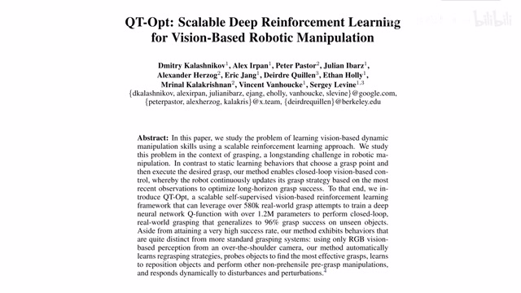
00:00:00–00:00:33 · 画面 001大家好,今天我们来介绍一篇 18 年的论文 QT-Opt Scalable Deep Reinforcement Learning for Vision-Based Robotic Manipulation。那么这篇论文提出了一个可以扩展的分布式的一个 reinforcement learning 的学习框架。当然它的本质还是基于 Q-learning。那么同时作者搭建了自动化的样本采集流程框架，这样子可以使机器人在没有人监管的情况下收集足够多的数据来帮助我们训练这一个非常大的模型，那么在今天的视频中呢，首先我们回顾一下针对不同动作空间的两种 DQN 的配置，然后呢介绍一下本文研究的机器人抓取任务，为什么这个任务是有研究意义的，那么随后呢我会介绍本文提出的这个 QTopt，那么最后呢是一些结果还有结论。
00:00:33–00:00:34 · 画面 002
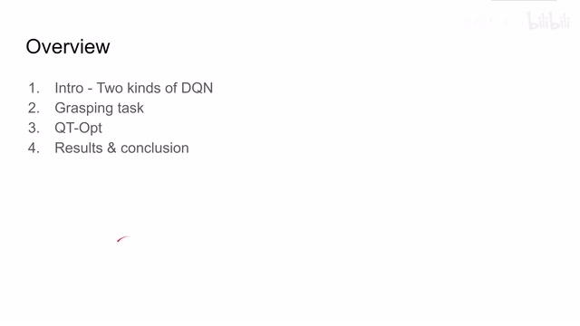
00:00:33–00:00:34 · 画面 00200:00:34–00:00:56 · 画面 003
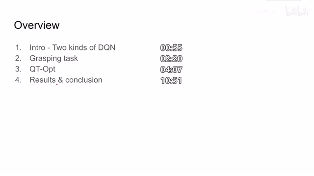
00:00:34–00:00:56 · 画面 003好的,首先我们来到 DQN 的部分,来探讨一下针对不同 Action Space,我们为什么会有两种 DQN 的配置。那么所有的 Action Space 动作空间其实都可以被分为两种,一种叫离散控制空间,比如说像雅达利的环境里面,我一共有四个按钮或者是六个按钮,我每次按下一个按钮,我不能按下半个按钮,对吧?那比如说像一个倒立摆系统,我要控制电机的转动的方向和力度。
00:00:56–00:01:32 · 画面 004
00:00:56–00:01:32 · 画面 004那么这个控制量呢，它是一个连续变量。那么针对这两种不同的动作空间呢，我们就可以设置两种不同的 q network。它的结构像左边这种离散动作空间，假如说我这个动作空间中有三个 action，那么我的这个 network，那么我的网络呢，就可以有三个 head，每个 head 呢，输出这个动作所对应的 q value。但是呢，如果我们使用的是连续动作空间，我们呢，就得把这个状态和这个动作
00:01:32–00:01:34 · 画面 005
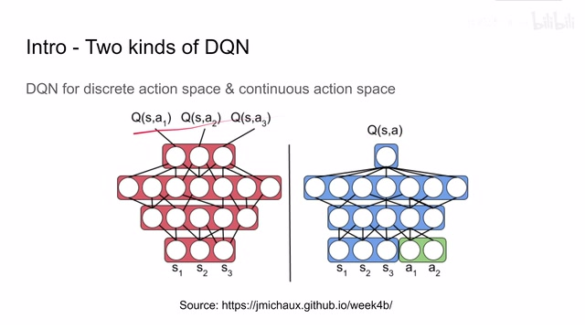
00:01:32–00:01:34 · 画面 00500:01:34–00:01:55 · 画面 006
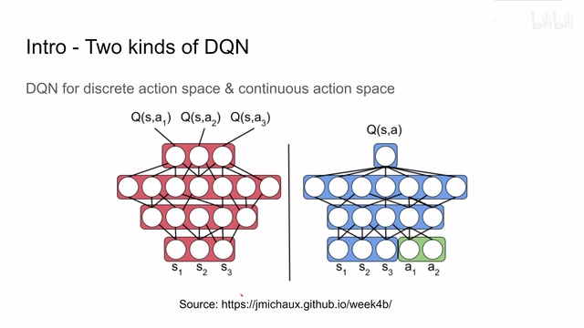
00:01:34–00:01:55 · 画面 00600:01:55–00:01:56 · 画面 007
00:01:55–00:01:56 · 画面 007因为它们都是连续的变量，把它们都作为网络的输入。然后呢，我们的网络最后只有一个 head。那么这个 head 呢，就是当前这个状态和这个动作它们组合的情况下的 qvalue。这就是我们针对不同的动作空间设计的不同的 dqn。当然如果你熟悉 actor critic，你会发现里面的 critic network 其实呢，长得就像这个样子。随后我们来介绍一下本文要解决的问题。
00:01:56–00:01:58 · 画面 008
00:01:56–00:01:58 · 画面 00800:01:58–00:02:01 · 画面 009
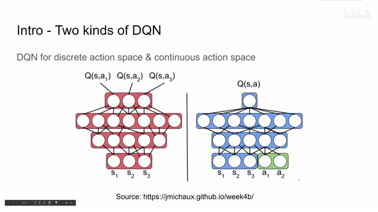
00:01:58–00:02:01 · 画面 00900:02:01–00:02:20 · 画面 010
00:02:01–00:02:20 · 画面 01000:02:20–00:02:23 · 画面 011
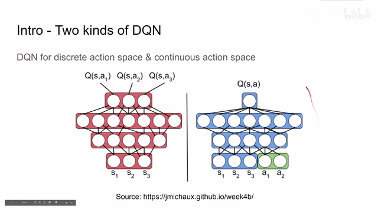
00:02:20–00:02:23 · 画面 01100:02:23–00:04:06 · 画面 012
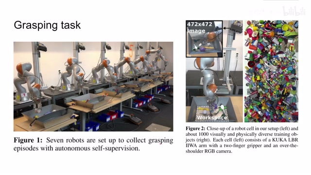
00:02:23–00:04:06 · 画面 012我们看到这里有一排机械手，每个机械手上面都有一个摄像头来看到下面的工作区域。那么作者希望通过摄像头的图像来引导机械手去把下面这个盒子中的物体给它抓起来。那么在这个过程中网络就要学习如何调节每一个电机的动作来使得机械手能够抓住这个物体。那这个时候可能有的朋友会说的,我们既然已经有了这个机器人的动力学啊,整个这些结构,我们直接自己造一个模型,让他自己去规划出一个动作来不就可以了吗?为什么我们需要用一个网络来整的这么复杂?甚至说还需要这个网络去学习,应该抓物体的哪一个部位啊等等等等,为什么需要整这么复杂呢?
因为在实际应用中，我们希望机械手去抓各式各样不同的物体。甚至在有些场合，一个物体你抓它的什么位置，这都是非常重要的。比如说一个马克杯放在那里，你拿它想倒水，你最好还是拿着它的把手，你不希望机器人拿着它上面的杯口来去倒水。当然具体抓到物体的什么位置在本篇论文中没有探讨，这也是一个非常有趣的研究方向。在这个领域呢，也有很多知名的论文。那么除了在地球上的应用之外呢，让我们来到火星甚至更遥远的行星，面对没有见过的环境，没有见过的物体。同时因为这个通讯延迟，没有人类的实质的帮助，那么机器人怎么能够成功的把物体抓起来呢？这都需要我们有一个好的 policy 来指导这个机器人执行这一系列的动作。好的，聊了这么多背景啊，那我们来看到本文提出的 QTopt。
00:04:06–00:04:07 · 画面 013
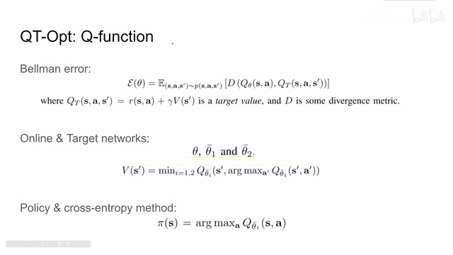
00:04:06–00:04:07 · 画面 01300:04:07–00:04:26 · 画面 014
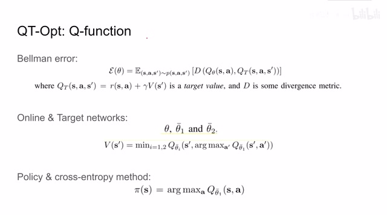
00:04:07–00:04:26 · 画面 014那么首先呢，本文的方法还是基于 qlearning 的方法。那么有 qlearning 呢，就有 qvalue。有 qvalue 呢，我们就需要 Bellman equation 来对这个 qvalue 进行计算。这里呢，作者也是维护一个 online network，维护 target network。其中这个 target network 就是当前状态的 reward 加上 discount factor 再加上下一个状态的 qvalue。那么这就是我们的 target value。而 d 呢，就是用来衡量 online value 和这个 target value
00:04:26–00:04:28 · 画面 015
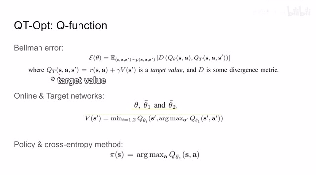
00:04:26–00:04:28 · 画面 01500:04:28–00:06:28 · 画面 016
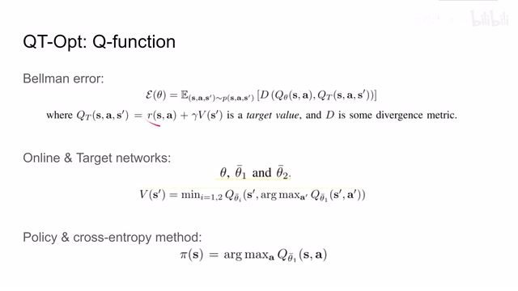
00:04:28–00:06:28 · 画面 016他们之间的差值了。在本文中呢，作者通过 sigma 的方式把所有的 qvalue 限制在 0 到 1 之间。所以呢，这里的 d 作者使用了 cross entropy 而不是我们常见的这个 L2 distance。那么随后我们再看到它的网络配置，我们会有一个 online network 是我们正在训练的这个 q 网络。我们还会有一些 target networks。那么这里呢，这个 theta 就是所谓的 online network。这里的 theta bar 1就是我们的第一个 target network 这个 network 呢是这个 theta 的 momentum 也就是每次更新它的值的时候呢是加权它当前的参数和这个 theta 的参数把它们加权之后作为新的 theta bar 1 的参数那么 theta bar 2 呢是另一个 target network 它呢就是复制很多 step 以前 theta 的 value 那么有了这三个 networks 之后呢我们再回到 Bellman equation
这里左边的一项就是我们的 online network 产生的。我们将样本的 state action 送到这个 online network 里面,它会输出一个 qvalue。那么右边的这一项 target value 呢,我们是需要根据这个 Bellman equation 来计算出来的。那么对于一个时刻的样本来说,这一时刻当前的 reward 是在样本当中的。这个 discount factor 是我们给定的一个常数。那么现在呢,我们只需要确定下一个状态最大的 qvalue 就可以了。
于是呢我们就在θ82 网络中寻找最大的 qvalue 但是呢有的朋友可能已经注意到了因为我们的学习环境是一个连续的动作空间也就是说呢我们这个 qnetwork 需要同时输入一个状态加 action 的组合那么状态呢这里非常好获得因为我们的样本中就有下一个时刻的状态那么 action 呢我们就需要选择一个能够使这个 q network 在当前这个状态的输入情况下能够取得最大的 q value 的这么一个 action 那么假定呢这里我们有一种神奇的方法已经能够确定到一个 action 那么这样子呢我们把得到这个 q value 就可以作为 target value 用来构造这个 bellman error 那么因为这里呢我们维护了两个 target network
00:06:28–00:07:41 · 画面 017
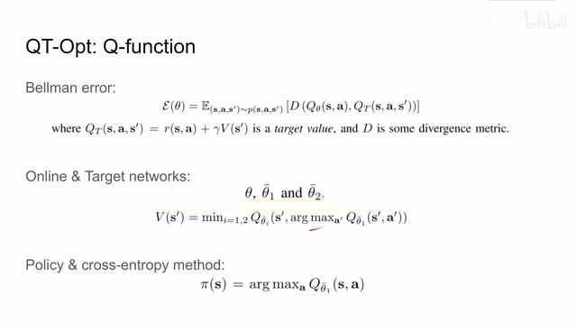
00:06:28–00:07:41 · 画面 017所以我们看到这里的作者选择了两个 target network 中值相对较小的一个这些都是为了稳定模型的训练来帮助这个模型尽快的收敛那么在这一步我们训练的 loss 已经构建好了那么现在的问题就在于我们如何能找到这么一个 action 它使得我们的 q network 它的 q value 在当前的 state 状态下达到最大那么这显然这就是一个经典的自由化的问题其实包括在我们实际运行这个 policy 的过程中我们观察到当前的状态我们也需要找到一个 action 来使得我们能够达到最高的 qvalue 那么寻找到的这个 action 也就是我们最终要执行的 action 那么本文作者就使用 cross entropy method 来作为自由化的方法去找到这么一个 action
00:07:41–00:07:42 · 画面 018
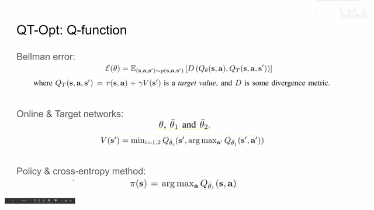
00:07:41–00:07:42 · 画面 01800:07:42–00:08:12 · 画面 019
00:07:42–00:08:12 · 画面 019当然这个 cross entropy 跟上面这个 cross entropy 它不是一个东西那么简单来说呢这个 cross entropy 的做法呢就是我先随机产生一个 gaussian distribution 那么我在这个 gaussian distribution 中呢采集比如说 m 个样本然后呢我们找到这个 m 个样本中的一很小部分的一个子集我们使用这 n 个样本以及它们对应的最优化的 loss那在这里呢就是这个 qvalue 来重新 fit 出一个 gaussian distribution 那么在下一个循环内呢我们再从这个新的高斯分布中去采样出 m 个样本如此迭代那么经过这样的不断迭代之后呢就能够得到一个 action 这个 action 呢尽量满足能够使我们的这个 qnetwork 它的 qvalue 是最大的
00:08:12–00:08:13 · 画面 020
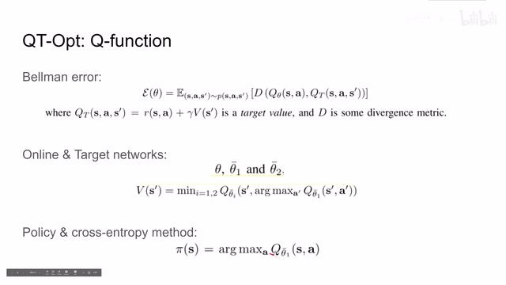
00:08:12–00:08:13 · 画面 02000:08:13–00:08:17 · 画面 021
00:08:13–00:08:17 · 画面 02100:08:17–00:08:22 · 画面 022
00:08:17–00:08:22 · 画面 02200:08:22–00:08:31 · 画面 023
00:08:22–00:08:31 · 画面 02300:08:31–00:08:36 · 画面 024
00:08:31–00:08:36 · 画面 024而且你可以看到在实际的 Policy 当中，作者也是为了网络的稳定，他选择了这个 ThetaBar1 这个 Target Network 来作为我们的 Policy，那么以上就是本文提出的最核心的 QT Opt，那么这种方法很好地改进了 DQN，使它也可以直接地在 Continuous Action Space 也就是连续动的空间上来运行，那么据作者说它比这个 Actor-Critic 还要更稳定一些。
00:08:36–00:08:46 · 画面 025
00:08:36–00:08:46 · 画面 02500:08:46–00:08:59 · 画面 026
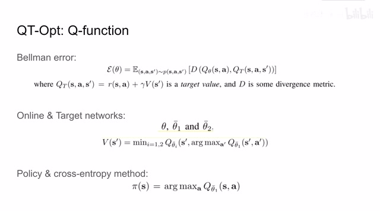
00:08:46–00:08:59 · 画面 02600:08:59–00:09:01 · 画面 027
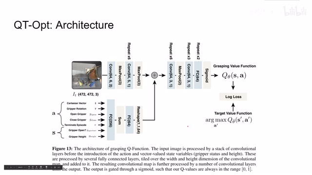
00:08:59–00:09:01 · 画面 027然后我们来看本文提出的这个 qtopt 它具体的网络结构那么这个网络呢首先它会有图像的输入它有它的 action 的输入此外呢为了这个模型能够更好地学习作者呢还把一些状态变量也放到这个 network 里面那么这样呢在拿到了所有的 state 和 action 之后整个这一个大网络经过一层一层的卷积还有全连接层之后做一个 sigma 我们就得到一个这个 qvalue
00:09:01–00:09:42 · 画面 028
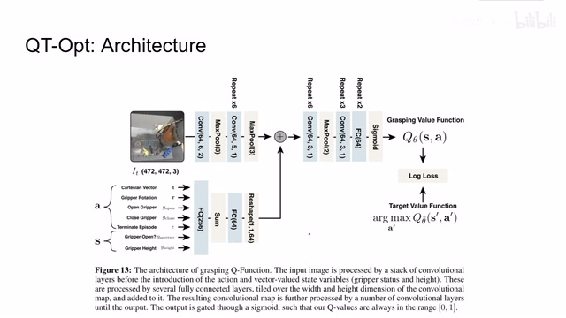
00:09:01–00:09:42 · 画面 028那么这个值呢在对比我们之前 target value function 的这个值我们就可以构建 loss 来训练整个这一大个网络当然了因为这个网络呢是非常庞大的需要很多的样本来训练这个网络那么这里呢作者就提出了一种分布式的可扩展的这么一个训练的框架虽然这个图看上去很复杂但是它其实本质上呢
00:09:42–00:10:52 · 画面 029
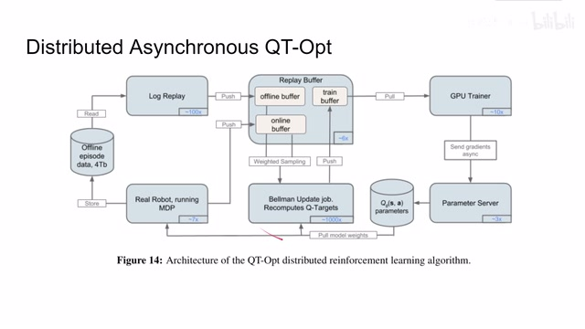
00:09:42–00:10:52 · 画面 029这里呢我们有很多的机器人在不断的采集数据，他们采集到数据呢分别被送到这个离线的数据库还有在线的 buffer 当中，那么我们在这些 buffer 中采集出一些样本来来计算这个 Bellman equation 来查找他们在网络中的 qvalue，最后呢得到这个 target value 和我们实际的 online network 它的 qvalue。
那两个 Qvalue 也是放到 training buffer 里面扔给我们的这个 GPU 去训练整个这个网络，那么训练好之后呢我们就可以更新这个网络中的所有的参数，那么这个参数呢再在适当的时候刷回到我们这个机械手里面，这样子整个一个训练的闭环就完成了，因为这是一个分布式系统。然后整个这个循环中呢存在很大的延迟，所以呢在训练的时候呢这其实是一个 offline 离线的这个 policy，那么作者表示呢虽然是 offline policy 但是不要紧，我们后面经过 online 的 fine-tune 能够很好的改善这个网络的性能，这里呢作者测试了面对一些新的物体机械手去抓他们的成功率，你可以看到呢使用这个 offline policy。
00:10:52–00:11:11 · 画面 030
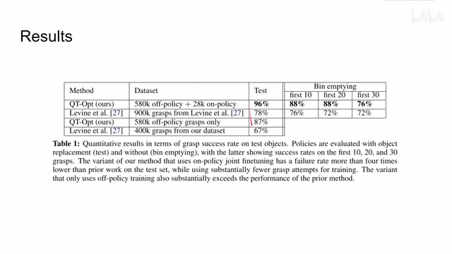
00:10:52–00:11:11 · 画面 030加上 OnPolicy 的 fine-tune，作者能够实现 96%的成功率，这个数据是非常不错的，对比之前的方法成功率有大幅的提升，然后作者还做了一些消融实验，比如说测试我们应该把什么样的 state 输入到 Network 里面，比如说只输入图像，只输入抓手的状态，还是包括整个抓手的高度等等，当然是输入的状态越多越好。
00:11:11–00:12:39 · 画面 031
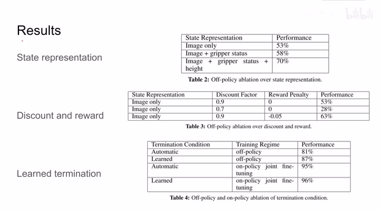
00:11:11–00:12:39 · 画面 031作者还测试了应该使用什么样的 discount factor 还有我们应该怎么样构建这个 reward 那么在默认的配置下呢作者就是每一个 episode 如果机器能够成功的把物体抓起来那么在这个序列结束的时候呢这个机器就会收到 1 点的 reward 那么如果不能够抓起来那么 reward 就是 0 那么这里呢作者还在动作的每一帧增加了 0.05 的这个惩罚这样就促使这个机器能够在尽可能短的时间内把我们的物体抓起来那么最后作者还训练了这个机器怎么去判断终止条件也就是说这个机器来判断我是不是已经成功了把物体抓起来了那么相对于之前的使用计算机视觉自动化来判断是否已经抓起来这个物体的方法呢
还是把这些所有东西都联合起来一起 fine-tune 对性能的提升更好，当然这里作者还汇报了很多有意思的实验，然后不同的实验配置全部都在他的附录里面，还是感兴趣的朋友非常推荐你去查看论文原文，包括作者在模拟环境中做了一些实验等等等等。
00:12:39–00:13:33 · 画面 032
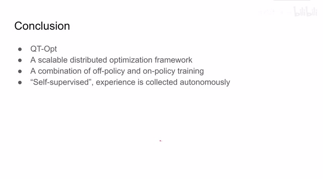
00:12:39–00:13:33 · 画面 032好的那么来到总结部分本文提出了这个 QT opt 这是一种能在连续动作空间进行的 Q learning 然后作者还提出了一个可扩展的这么一个分布式学习的框架也就是说你可以通过增加机器人的数量来全自动的收集样本训练你的 policy 所以说这也是一种物理层面的 self-supervised 毕竟我们可以通过简单的计算机视觉的手段来检测这个物体是不是被抓起来了然后呢对这个整个的 policy 进行反馈所以这个环节中基本不需要人来参与的那么最后呢苏尔还说这是一种结合了 off policy 和 on policy 的方法那么如果你正在解决相关的问题的话希望呢他能对你有所启发好的以上就是我对于这篇论文的简单的分析这篇论文也是有一定年头但是还是非常经典的一篇论文那么感谢您的收看再见
00:13:33–00:13:34 · 画面 033
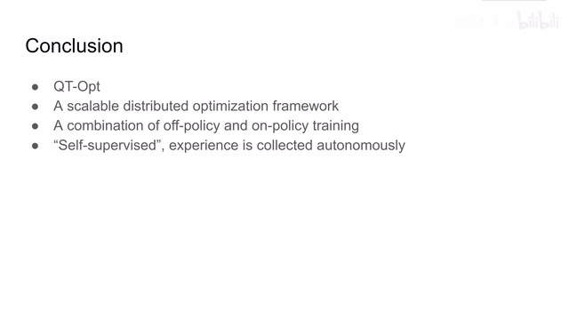
00:13:33–00:13:34 · 画面 033转写与来源说明 · 0 个自动复核提示
保留 31 个原始语音片段，0 个片段触发自动复核提示。提示仅用于定位可能的术语、重复或识别问题，不等于已确认错误。
讲解画面为源视频截图（640×360），不是可编辑 PPT 文件。全片按每秒 2 帧扫描内容变化，逐步展开页保留；连续动画保留代表画面。清晰度受源视频限制。
原视频：paper/合集_2026-10-16_机器人学/[论文简析]QT-Opt Scalable Deep RL for Vision-Based Robotic Manipulation[1806.10293].mp4
SHA-256：b52e280a61a51793a76b636829411eb1b85a92c3e3040f6b4a6cd2708722bb14
全文按视频语音与画面制作。原论文可从上方链接下载；完整资料包保留全文、原始逐字稿、字幕和校对记录。